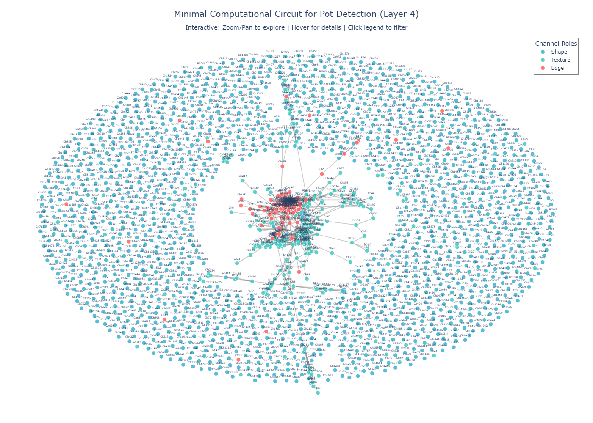

Circuit Extraction for Pot Detection
This post walks through an end-to-end circuit extraction pipeline for a fine-tuned Faster R-CNN pot detector: from checkpoint loading to interactive visualization of the minimal channel-level circuit in ResNet layer4.
Building on earlier sparse probing work, the goal is to identify which channels matter for pot detection, how they co-activate on real images, and how their roles evolve across the detection stack.
Pipeline overview
The notebook defines a reproducible workflow: install dependencies, load a Faster R-CNN ResNet50-FPN model, crop and normalize a large orthomosaic to 1024px × 1024px tiles, run an ablation study over 2048 layer4 channels, and extract a sparse co-activation graph.
Outputs include an interactive Plotly circuit_diagram.html, ablation scores (channel_importance.npy), and a serialized circuit object (circuit.npy) that can be reused for downstream analysis or visualization.
Model and data setup
The pipeline instantiates a Faster R-CNN ResNet50-FPN detector with a custom two-class head (background + pot) and restores weights from a fine-tuned checkpoint stored in Google Drive.
A dedicated loader handles both GeoTIFFs and standard RGB images, normalizing dynamic range and enforcing a 1024px × 1024px crop that matches the detector’s training tiles, with options to center-crop or specify custom offsets.
Activation capture and patching
An ActivationCapture helper attaches forward hooks to arbitrary modules (e.g., backbone.body.layer4) and caches activations for later co-activation and role analysis without modifying model code.
The activation patching engine implements robust channel ablation across 2D, 3D, and 4D tensors, zeroing a specified feature index and measuring how detection scores change on the same image.
Ablation study on layer4
The core ablation routine iterates over all 2048 layer4 channels, patches each one in turn during a forward pass, and records the impact on the maximum detection score relative to the unpatched baseline.
Running this sweep takes roughly 5 minutes on a T4 GPU and yields a long-tailed distribution of channel importance that can be visualized with histograms and ranked curves, with a configurable percentile used to define critical channels.
From importance to circuit
Circuit extraction selects the top percentile of channels by ablation impact and treats them as nodes, then flattens their spatial activations to compute pairwise correlations and create edges between strongly co-activating pairs.
The implementation is defensive: it skips channels with near-constant activations, handles NaNs in correlation matrices, and falls back gracefully when activations lack spatial structure (e.g., fully connected layers).
Semantic role assignment
Each critical channel is assigned a semantic role by analyzing spatial gradients and autocorrelation of its activation map, classifying it as an edge, texture, shape, or semantic feature based on normalized edge strength and localization patterns.
The notebook includes utilities to overlay top edge, texture, shape, and semantic channels on the input image, making it easy to visually audit whether the heuristic matches intuitive feature behavior.
Interactive circuit visualization
The visualize_circuit helper builds an undirected NetworkX graph whose nodes are critical channels colored by role and sized by ablation importance, with edges weighted by co-activation strength.
A Plotly front-end renders this graph as an interactive HTML file with zoom, pan, hover tooltips, legend-based role filtering, and export options, plus a textual summary of circuit sparsity and role counts.